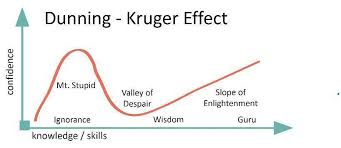
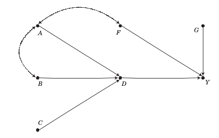

Download the notebook here!
Interactive online version: 
Introduction¶
This course introduces students to basic microeconmetric methods. The objective is to learn how to make and evaluate causal claims. By the end of the course, students should to able to apply each of the methods discussed and critically evaluate research based on them.
I just want to discuss some basic features of the course. We discuss the core references, the tooling for the course, student projects, and illustrate the basics of the potential outcomes model and causal graphs.
Causal questions¶
What is the causal effect of …
neighborhood of residence on educational performance, deviance, and youth development
school vouchers on learning?
of charter schools on learning?
worker training on earnings?
…
What causal question brought you here?
Core reference Test¶
The whole course is built on the following textbook:
Winship, C., & Morgan, S. L. (2007). Counterfactuals and causal inference: Methods and principles for social research. Cambridge, England: Cambridge University Press.
This is a rather non-standard textbook in economics. However, I very much enjoy working with it as it provides a coherent conceptual framework for a host of different methods for causal analysis. It then clearly delineates the special cases that allow the application of particular methods. We will follow their lead and structure our thinking around the counterfactual approach to causal analysis and its two key ingredients potential outcome model and directed graphs.
It also is one of the few textbooks that includes extensive simulation studies to convey the economic assumptions required to apply certain estimation strategies.
It is not very technical at all, so will also need to draw on more conventional resources to fill this gap.
Wooldridge, J. M. (2001). Econometric analysis of cross section and panel data. Cambridge, MA: The MIT Press.
Angrist, J. D., & Pischke, J. (2009). Mostly harmless econometrics: An empiricists companion. Princeton, NJ: Princeton University Press.
Frölich, M., and Sperlich, S. (2019). Impact evaluation: Treatment effects and causal analysis. Cambridge, England: Cambridge University Press.
Focusing on the conceptual framework as much as we do in the class has its cost. We might not get to discuss all the approaches you might be particularly interested in. However, my goal is that all of you can draw on this framework later on to think about your econometric problem in a structured way. This then enables you to choose the right approach for the analysis and study it in more detail on your own.

Combining this counterfactual approach to causal analysis with sufficient domain-expertise will allow you to leave the valley of despair.
Lectures¶
We follow the general structure of Winship & Morgan (2007).
Counterfactuals, potential outcomes and causal graphs
Estimating causal effects by conditioning on observables
regression, matching, …
Estimating causal effects by other means
instrumental variables, mechanism-based estimation, regression discontinuity design, …
Tooling¶
We will use open-source software and some of the tools building on it extensively throughout the course.
We will briefly discuss each of these components over the next week. By then end of the term, you hopefully have a good sense on how we combine all of them to produce sound empirical research. Transparency and reproducibility are a the absolute minimum of sound data science and all then can be very achieved using the kind of tools of our class.
Compared to other classes on the topic, we will do quite some programming in class. I think I have a good reason to do so. From my own experience in learning and teaching the material, there is nothing better to understand the potential and limitations of the approaches we discuss than to implemented them in a simulation setup where we have full control of the underlying data generating process.
To cite Richard Feynman: What I cannot create, I cannot understand.
However, it is often problematic that students have a very, very heterogeneous background regarding their prior programming experience and some feel intimidated by the need to not only learn the material we discuss in class but also catch up on the programming. To mitigate this valid concern, we started several accompanying initiatives that will get you up to speed such as additional workshop, help desks, etc. Make sure to join our Q&A channels in Zulip and attend the our Computing Primer.
Problem sets¶
Thanks to Mila Kiseleva, Tim Mensinger, and Sebastian Gsell we now have four problem sets available on our website.
Potential outcome model
Matching
Regression-discontinuity design
Generalized Roy model
Just as the whole course, they do not only require you to further digest the material in the course but also require you to do some programming. They are available on our course website and we will discuss them in due course.
Projects¶
Applying methods from data science and understanding their potential and limitations is only possible when bringing them to bear on one’s one research project. So we will work on student projects during the course. More details are available here.
Data sources¶
Throughout the course, we will use several data sets that commonly serve as teaching examples. We collected them from several textbooks and are available in a central place in our online repository here.
Potential outcome model¶
The potential outcome model serves us several purposes:
help stipulate assumptions
evaluate alternative data analysis techniques
think carefully about process of causal exposure
Basic setup¶
There are three simple variables:
\(D\), treatment
\(Y\), observed outcome
\(Y_1\), outcome in the treatment state
\(Y_0\), outcome in the no-treatment state
Examples¶
economics of education
health economics
industrial organization
\(...\)
Exploration¶
We will use our first dataset to illustrate the basic problems of causal analysis. We will use the original data from the article below:
LaLonde, R. J. (1986). Evaluating the econometric evaluations of training programs with experimental data. The American Economic Review, 76(4), 604-620.
He summarizes the basic setup as follows:
The National Supported Work Demonstration (NSW) was temporary employment program desinged to help disadvantaged workers lacking basic job skills move into the labor market by giving them work experience and counseling in sheltered environment. Unlike other federally sponsored employment programs, the NSW program assigned qualified applications randomly. Those assigned to the treatment group received all the benefits of the NSW program, while those assigned to the control group were left to fend for themselves.
What is the effect of the program?
We will have a quick look at a subset of the data to illustrate the fundamental problem of evaluation, i.e. we only observe one of the potential outcomes depending on the treatment status but never both.
[1]:
import matplotlib.pyplot as plt
import seaborn as sns
import pandas as pd
import numpy as np
# We collected a host of data from two other influential textbooks.
df = pd.read_csv("../../datasets/processed/dehejia_waba/nsw_lalonde.csv")
df.index.set_names("Individual", inplace=True)
[2]:
df.describe()
[2]:
| treat | age | education | black | hispanic | married | nodegree | re75 | re78 | |
|---|---|---|---|---|---|---|---|---|---|
| count | 722.000000 | 722.000000 | 722.000000 | 722.000000 | 722.000000 | 722.000000 | 722.000000 | 722.000000 | 722.000000 |
| mean | 0.411357 | 24.520776 | 10.267313 | 0.800554 | 0.105263 | 0.162050 | 0.779778 | 3042.896575 | 5454.635848 |
| std | 0.492421 | 6.625947 | 1.704774 | 0.399861 | 0.307105 | 0.368752 | 0.414683 | 5066.143366 | 6252.943422 |
| min | 0.000000 | 17.000000 | 3.000000 | 0.000000 | 0.000000 | 0.000000 | 0.000000 | 0.000000 | 0.000000 |
| 25% | 0.000000 | 19.000000 | 9.000000 | 1.000000 | 0.000000 | 0.000000 | 1.000000 | 0.000000 | 0.000000 |
| 50% | 0.000000 | 23.000000 | 10.000000 | 1.000000 | 0.000000 | 0.000000 | 1.000000 | 936.307950 | 3951.889000 |
| 75% | 1.000000 | 27.000000 | 11.000000 | 1.000000 | 0.000000 | 0.000000 | 1.000000 | 3993.207000 | 8772.004250 |
| max | 1.000000 | 55.000000 | 16.000000 | 1.000000 | 1.000000 | 1.000000 | 1.000000 | 37431.660000 | 60307.930000 |
[3]:
# It is important to check for missing values first.
for column in df.columns:
assert not df[column].isna().any()
Note that this lecture, just as all other lectures, is available on  so you can easily continue working on it and take your exploration to another direction.
so you can easily continue working on it and take your exploration to another direction.
There are numerous discrete variables in this dataset describing the individual’s background. How does their distribution look like?
[4]:
columns_background = [
"treat",
"age",
"education",
"black",
"hispanic",
"married",
"nodegree",
]
for column in columns_background:
sns.countplot(x=df[column], color="#1f77b4")
plt.show()


How about the continous earnings variable?
[5]:
columns_outcome = ["re75", "re78"]
for column in columns_outcome:
earnings = df[column]
# We drop all earnings at zero.
earnings = earnings.loc[earnings > 0]
ax = sns.histplot(earnings)
ax.set_xlim([0, None])
plt.show()

We work under the assumption that the data is generated by an experiment. Let’s make sure by checking the distribution of the background variables by treatment status.
[6]:
info = ["count", "mean", "std"]
for column in columns_background:
print("\n\n", column.capitalize())
print(df.groupby("treat")[column].describe()[info])
Treat
count mean std
treat
0 425.0 0.0 0.0
1 297.0 1.0 0.0
Age
count mean std
treat
0 425.0 24.447059 6.590276
1 297.0 24.626263 6.686391
Education
count mean std
treat
0 425.0 10.188235 1.618686
1 297.0 10.380471 1.817712
Black
count mean std
treat
0 425.0 0.800000 0.400471
1 297.0 0.801347 0.399660
Hispanic
count mean std
treat
0 425.0 0.112941 0.316894
1 297.0 0.094276 0.292706
Married
count mean std
treat
0 425.0 0.157647 0.364839
1 297.0 0.168350 0.374808
Nodegree
count mean std
treat
0 425.0 0.814118 0.389470
1 297.0 0.730640 0.444376
What is the data that corresponds to \((Y, Y_1, Y_0, D)\)?
[7]:
# We first create True / False
is_treated = df["treat"] == 1
df["Y"] = df["re78"]
df["Y_0"] = df.loc[~is_treated, "re78"]
df["Y_1"] = df.loc[is_treated, "re78"]
df["D"] = np.nan
df.loc[~is_treated, "D"] = 0
df.loc[is_treated, "D"] = 1
df[["Y", "Y_1", "Y_0", "D"]].sample(10)
[7]:
| Y | Y_1 | Y_0 | D | |
|---|---|---|---|---|
| Individual | ||||
| 479 | 6930.336 | NaN | 6930.336 | 0.0 |
| 94 | 3881.284 | 3881.284 | NaN | 1.0 |
| 146 | 3075.862 | 3075.862 | NaN | 1.0 |
| 407 | 20893.110 | NaN | 20893.110 | 0.0 |
| 269 | 12590.710 | 12590.710 | NaN | 1.0 |
| 8 | 2164.022 | 2164.022 | NaN | 1.0 |
| 592 | 0.000 | NaN | 0.000 | 0.0 |
| 260 | 0.000 | 0.000 | NaN | 1.0 |
| 421 | 3931.238 | NaN | 3931.238 | 0.0 |
| 35 | 0.000 | 0.000 | NaN | 1.0 |
Let us get a basic impression on how the distribution of earnings looks like by treatment status.
[8]:
df.groupby("D")["re78"].describe()
[8]:
| count | mean | std | min | 25% | 50% | 75% | max | |
|---|---|---|---|---|---|---|---|---|
| D | ||||||||
| 0.0 | 425.0 | 5090.048302 | 5718.088763 | 0.0 | 0.0000 | 3746.701 | 8329.823 | 39483.53 |
| 1.0 | 297.0 | 5976.352033 | 6923.796427 | 0.0 | 549.2984 | 4232.309 | 9381.295 | 60307.93 |
[9]:
ax = sns.histplot(df.loc[~is_treated, "Y"], label="untreated")
ax = sns.histplot(df.loc[is_treated, "Y"], label="treated")
ax.set_xlim(0, None)
ax.legend()
[9]:
<matplotlib.legend.Legend at 0x7fec7859b0d0>

We are now ready to reproduce one of the key findings from this article. What is the difference in earnings in 1978 between those that did participate in the program and those that did not?
[10]:
stat = df.loc[is_treated, "Y"].mean() - df.loc[~is_treated, "Y"].mean()
f"{stat:.2f}"
[10]:
'886.30'
Earnings are $886.30 higher among those that participate in the treatment compared to those that do not. Can we say even more?
References
Here are some further references for the potential outcome model.
Heckman, J. J., and Vytlacil, E. J. (2007a). Econometric evaluation of social programs, part I: Causal effects, structural models and econometric policy evaluation. In J. J. Heckman, and E. E. Leamer (Eds.), Handbook of Econometrics (Vol. 6B, pp. 4779–4874). Amsterdam, Netherlands: Elsevier Science.
Imbens G. W., and Rubin D. B. (2015). Causal inference for statistics, social, and biomedical sciences: An introduction. Cambridge, England: Cambridge University Press.
Rosenbaum, P. R. (2017). Observation and experiment: An introduction to causal inference. Cambridge, MA: Harvard University Press.
Causal graphs¶
One unique feature of our core textbook is the heavy use of causal graphs to investigate and assess the validity of different estimation strategies. There are three general strategies to estimate causal effects and their applicability depends on the exact structure of the causal graph.
condition on variables, i.e. matching and regression-based estimation
exogenous variation, i.e. instrumental variables estimation
establish an exhaustive and isolated mechanism, i.e. structural estimation
Here are some examples of what to expect.



The key message for now:
There is often more than one way to estimate a causal effect with differing demands about knowledge and observability
Pearl (2009) is the seminal reference on the use of graphs to represent general causal representations.
References
Pearl, J. (2014). Causality. Cambridge, England: Cambridge University Press.
Pearl, J., and Mackenzie, D. (2018). The book of why: The new science of cause and effect. New York, NY: Basic Books.
Pearl J., Glymour M., and Jewell N. P. (2016). Causal inference in statistics: A primer. Chichester, UK: Wiley.
Resources¶
LaLonde, R. J. (1986). Evaluating the econometric evaluations of training programs with experimental data. The American Economic Review, 76(4), 604-620.